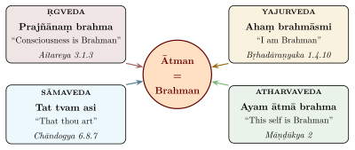
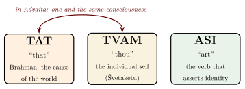
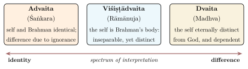
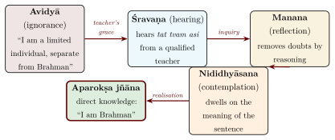

Chapter 5: The Mahāvākyas — The Four Great Sayings¶
5.1 Introduction to the Mahāvākyas¶
Among the vast number of Upaniṣadic utterances, the Advaita tradition singled out four sentences as possessing supreme philosophical and spiritual significance. These are the Mahāvākyas — the “Great Sayings” — one drawn from an Upaniṣad of each of the four Vedas. The grouping is post-Upaniṣadic: Śaṅkara already treats sentences such as tat tvam asi as “great sayings” that convey the identity of Self and Brahman, but the canonical set of four, with its correlation to the four Vedas, is expounded in later Advaita works such as the fifth chapter (Mahāvākya-viveka) of Vidyāraṇya’s Pañcadaśī (14th century). Theistic Vedāntins accept the sentences as scripture but deny that they teach identity.
In the Advaita tradition the Mahāvākyas are more than propositions to be debated; they serve as the means of knowledge (pramāṇa) through which the prepared student attains aparokṣa-jñāna (direct, unmediated knowledge of Brahman) (Figure 5.1). Because the very idea of four “great sayings” belongs to Advaita, this chapter sets out the Advaita account first; the theistic readings, which deny that the sentences teach identity, are given in Sections 5.8 and 5.13 and in Chapter 11.

5.2 The Fourfold Function of the Mahāvākyas¶
Modern Advaita teaching often assigns a specific function to each Mahāvākya (Table 5.1).
| Mahāvākya | Veda | Function | Explanation |
|---|---|---|---|
| Prajñānaṃ Brahma | Ṛgveda | Lakṣaṇa vākya (Definition) | Defines the nature of Brahman as consciousness |
| Tat tvam asi | Sāmaveda | Upadeśa vākya (Teaching) | The Guru’s instruction to the student |
| Ahaṃ Brahmāsmi | Yajurveda | Anubhava vākya (Experience) | The student’s own realisation |
| Ayaṃ Ātmā Brahma | Atharvaveda | Anusandhāna vākya (Contemplation) | Continuous meditative contemplation |
Read in sequence, the four functions describe a course of instruction: the nature of reality is defined; the teacher instructs the student in the identity of self and Brahman; the student realises that identity; and the realised student maintains the awareness through continuous contemplation. The scheme should be treated with caution. It is not in the Upaniṣads, which do not rank these sentences or group them as four, and although Vidyāraṇya’s Mahāvākya-viveka explains the four sentences one after another, the editor has not been able to trace the complete fourfold scheme of functions to a classical Advaita text. It is best understood as a teaching device of the modern Advaita tradition, not as a doctrine of the Upaniṣads.
5.3 Prajñānaṃ Brahma — Consciousness is Brahman¶
5.3.1 Source and Context¶
This Mahāvākya appears in the Aitareya Upaniṣad (3.1.3) of the Ṛgveda. The Aitareya first lists the cognitive and vital functions — sensation, perception, discrimination, intelligence, insight, steadfastness, thought, impulse, memory, resolution, purpose, life, desire and control — and calls them all names of a single reality, prajñāna (consciousness) (Section 3.4 and Figure 3.4).
eṣa brahmā eṣa indraḥ eṣa prajāpatiḥ / ete sarve devā imāni ca pañca mahābhūtāni…/ sarvaṃ tat prajñānetram / prajñāne pratiṣṭhitam / prajñānetro lokaḥ / prajñā pratiṣṭhā / prajñānaṃ brahma
Translation: “This is Brahmā, this is Indra, this is Prajāpati; all these gods and the five great elements…all this is guided by consciousness, is established in consciousness. The world is guided by consciousness. Consciousness is the foundation. Consciousness is Brahman.”
— Aitareya Upaniṣad 3.1.3
5.3.2 Philosophical Analysis¶
The equation Prajñānaṃ = Brahma, read in the Advaita way, claims that consciousness is not a by-product of matter, but is itself the ultimate reality. Western philosophers would class such a position as a form of idealism. In the modern Advaita scheme the sentence is the “definitional sentence” (lakṣaṇa-vākya) because it states the essential nature (svarūpa) of Brahman: not a distant deity or an abstract principle, but the consciousness by which anything at all is known.
The point of the passage is that all these functions are treated as names of a single reality, prajñāna. On the Vedāntic reading consciousness is not one function among many but the light by which all functions are illumined.
Consciousness as Substrate
The Aitareya’s argument structure may be formalised thus: (1) Every cognitive function presupposes a knowing capacity. (2) This knowing capacity is invariant across all functions — it is the same “light” whether it manifests as memory, desire, or intelligence. (3) This invariant knowing capacity is prajñāna. (4) Since Brahman is defined as the ultimate substrate of all reality, and prajñāna is the ultimate substrate of all cognition, prajñānaṃ brahma. This reconstruction (a modern one, not the text’s own wording) invites comparison with Kant’s “transcendental unity of apperception” — the necessary unity of consciousness that underlies all experience.
5.3.3 The Three Schools on Prajñānaṃ Brahma¶
The three Vedāntic schools interpret this Mahāvākya in characteristically different ways. Rāmānuja did not comment on the Aitareya, and Table 5.2 is illustrative: it applies each school’s general doctrine of consciousness, as set out in Chapter 11, to the sentence rather than quoting a commentary on it.
| School | Interpretation |
|---|---|
| Advaita (Śaṅkara) | Consciousness is the very essence of Brahman; Brahman is consciousness, not merely possesses it. All apparent multiplicity of cognitive functions is superimposed upon the one non-dual consciousness. |
| Viśiṣṭādvaita (Rāmānuja) | Consciousness is the defining attribute (dharma-bhūta-jñāna) of Brahman (Nārāyaṇa). Brahman possesses consciousness as an essential quality, but is not reducible to consciousness alone. |
| Dvaita (Madhva) | Consciousness characterises both God and individual souls, but God’s consciousness is independent (svatantra) while the soul’s consciousness is dependent (paratantra). The sentence defines Brahman’s supreme attribute, not identity with the jīva. |
5.4 Tat Tvam Asi — That Thou Art¶
5.4.1 Source and Context¶
This, the most often discussed of the Mahāvākyas, appears in the Chāndogya Upaniṣad (6.8.7 and following) as the culminating declaration of the Sad-Vidyā teaching of Uddālaka Āruṇi to his son Śvetaketu.
5.4.2 The Three Words Analysed¶
The sentence Tat tvam asi consists of three words, each of which the schools analysed closely (Figure 5.2).

5.4.3 The Method of Jahad-Ajahad Lakṣaṇā¶
Advaita holds that the identity asserted by Tat tvam asi is not a crude equation of the individual empirical self (with all its limitations) with the cosmic Lord (with all his powers). Śaṅkara and his pupil Sureśvara analyse the sentence as one in which two words with different connotations refer to the same thing; later manuals such as Sadānanda’s Vedāntasāra systematise this as jahad-ajahad lakṣaṇā (also called bhāga-tyāga lakṣaṇā) — the method of “partially retaining and partially abandoning” the literal meanings (Table 5.3).
| Word | Literal Meaning (Vācyārtha) | To be Abandoned | To be Retained (Lakṣyārtha) |
|---|---|---|---|
| Tat (That) | Īśvara: omniscient, omnipotent creator | Attributes of omniscience, omnipotence, creatorship | Pure Consciousness (Cit) |
| Tvam (Thou) | Jīva: limited, ignorant, suffering | Attributes of limitation, ignorance, suffering | Pure Consciousness (Cit) |
| Asi (Art) | Identity | — | Absolute identity of the Cit in both |
A classic illustration is offered: “This is that Devadatta.” When we say, “This Devadatta (seen here and now, old and grey) is that Devadatta (seen there, years ago, young and dark),” we abandon the contradictory attributes (youth/age, there/here) and retain the identical referent — the person Devadatta. Similarly, Tat tvam asi abandons the contradictory attributes of Īśvara and jīva but retains the identical referent: pure Consciousness.
5.4.4 The Refrain in Its Context¶
Uddālaka does not assert the identity once; he gives nine successive illustrations (Section 4.1 and Table 4.1), each followed by the refrain “sa ya eṣo ’ṇimaitadātmyam idaṃ sarvaṃ, tat satyaṃ, sa ātmā, tat tvam asi, śvetaketo” (“That which is the finest essence — the whole world has that as its Self. That is the True. That is the Self. That thou art, O Śvetaketu.”).
Each illustration brings out a different side of the teaching: the pervasiveness of Being (salt in water), the invisibility of the ultimate cause (banyan seed), the dependence of all particulars on the universal (rivers and ocean), and the role of the teacher in removing ignorance (the blindfolded man). The setting matters too: the saying is addressed to a student who has returned from twelve years of Vedic study “conceited, considering himself learned, and arrogant” (mahāmanā anūcānamānī stabdhaḥ, Chāndogya 6.1.2), and it answers his father’s question about the one teaching by which the unknown becomes known (6.1.3; see Section 4.1).
5.4.5 The Three Types of Lakṣaṇā¶
The Advaita analysis of Tat tvam asi draws on the three types of lakṣaṇā (secondary or indicative meaning) recognised by the Indian theorists of language:
Jahad-lakṣaṇā (Exclusive Indication): The literal meaning is entirely abandoned in favour of the secondary meaning. Example: “The village is on the Gaṅgā” — the village is not literally on the river but on its bank.
Ajahad-lakṣaṇā (Inclusive Indication): The literal meaning is entirely retained but supplemented. Example: “The red one is running” — the redness is retained and supplemented by identifying a specific red object (a horse).
Jahad-ajahad lakṣaṇā (Partial Indication): Part of the literal meaning is abandoned and part is retained. This is the method applied to Tat tvam asi: the contradictory attributes of Īśvara (omniscience, creatorship) and jīva (limitation, ignorance) are abandoned, while the common referent — pure Consciousness — is retained.
Advaita teachers treat this analysis as a contemplative practice as well as a rule of interpretation: the student is to abandon the identification with the limited body and mind (the contradictory attributes of tvam) and retain the awareness that is their common referent.
5.5 Ahaṃ Brahmāsmi — I Am Brahman¶
5.5.1 Source and Context¶
This Mahāvākya appears in the Bṛhadāraṇyaka Upaniṣad (1.4.10). The context is the primordial Self’s act of self-recognition:
brahma vā idam agra āsīt / tad ātmānam evāvet — ahaṃ brahmāsmīti / tasmāt tat sarvam abhavat
Translation: “In the beginning, this was Brahman alone. It knew only Itself, (saying) ‘I am Brahman.’ Therefore, It became all.”
— Bṛhadāraṇyaka Upaniṣad 1.4.10
5.5.2 Philosophical Significance¶
While Tat tvam asi is the guru’s teaching to the student (second person: “Thou art That”), Ahaṃ Brahmāsmi is the student’s own realisation expressed in the first person: “I am Brahman.” This is not an assertion of the ego; it is the dissolution of the ego in the recognition of one’s true nature as infinite consciousness.
The text immediately adds: tasmāt tat sarvam abhavat — “Therefore, It became all.” It goes on to say that whoever knows “I am Brahman” becomes this whole world; in the Advaita reading such a person does not become something new but recognises that he has always been Brahman. Even the gods cannot prevent this, for, as the text says, such a person becomes the Self of the gods themselves.
In Advaita teaching the passage from Tat tvam asi (the teacher’s instruction) to Ahaṃ Brahmāsmi (the student’s own recognition) marks the point at which hearing (śravaṇa), reflection (manana) and contemplation (nididhyāsana) have issued in direct knowledge. In the Bṛhadāraṇyaka itself the sentence is spoken first by Brahman in a creation narrative, not by a student.
5.6 Ayaṃ Ātmā Brahma — This Self is Brahman¶
5.6.1 Source and Context¶
The fourth Mahāvākya is found in the Māṇḍūkya Upaniṣad (Mantra 2):
sarvaṃ hy etad brahma / ayam ātmā brahma / so’yam ātmā catuṣpāt
Translation: “All this is indeed Brahman. This Self is Brahman. This Self has four quarters.”
— Māṇḍūkya Upaniṣad, Mantra 2
5.6.2 The Demonstrative “This” (Ayam)¶
The commentators attach weight to the demonstrative pronoun ayam (“this”). In their reading it points to the self as immediately present and directly experienced — not a distant, transcendent entity, but the awareness that is now reading, thinking and experiencing — and declares that this self is Brahman.
5.7 The Mahāvākyas in Sannyāsa Dīkṣā¶
In the living tradition, the Mahāvākyas play a concrete liturgical role. When a person takes sannyāsa (formal renunciation) in the Daśanāmī order associated with Śaṅkara, the guru imparts one of the Mahāvākyas to the initiate, which then becomes a lifelong object of contemplation. According to the Maṭhāmnāya tradition, each of the four principal monasteries (maṭhas), whose foundation is traditionally ascribed to Śaṅkara, is associated with one Veda and its Mahāvākya; in practice the saying imparted depends on the lineage into which one is initiated. Historians regard the four-maṭha organisation as a later, probably second-millennium, development projected back onto Śaṅkara (Table 5.4).
| Veda | Mahāvākya | Source; associated Maṭha |
|---|---|---|
| Ṛgveda | Prajñānaṃ Brahma | Aitareya; Govardhana Maṭha, Purī |
| Yajurveda | Ahaṃ Brahmāsmi | Bṛhadāraṇyaka; Śāradā Pīṭha, Śṛṅgerī |
| Sāmaveda | Tat Tvam Asi | Chāndogya; Śāradā Maṭha, Dvārakā |
| Atharvaveda | Ayaṃ Ātmā Brahma | Māṇḍūkya; Jyotir Maṭha, Jośīmaṭh |
5.8 Divergent Interpretations of the Mahāvākyas¶
The three principal schools of Vedānta interpret the Mahāvākyas very differently (Figure 5.3):
Advaita Vedānta (Śaṅkara): The Mahāvākyas assert absolute identity (abheda) between Ātman and Brahman. The apparent difference between the individual self and the Absolute is due to avidyā (ignorance) and is sublated upon realisation.
Viśiṣṭādvaita Vedānta (Rāmānuja): The Mahāvākyas assert qualified identity — the individual self is a part or mode of Brahman, not absolutely identical. Rāmānuja reads “Tat tvam asi” as co-reference: both “That” and “thou” ultimately denote Brahman, the first as cause of the world and the second as the inner controller who has the individual self as his body. The relationship is one of inseparable distinction (apṛthak-siddhi).
Dvaita Vedānta (Madhva): The Mahāvākyas do not assert identity at all — the individual self is eternally distinct from Brahman, though wholly dependent upon Him. Madhva and his followers interpret the sentence as expressing similarity or dependence (“you belong to That”, “you are like That”), and some divide the preceding words of Chāndogya 6.8.7 (sa ātmā tat tvam asi) so as to read sa ātmātat tvam asi, “you are not That”.

5.9 The Transformative Power of the Mahāvākyas¶
In the Advaita framework the Mahāvākyas are meant to transform the hearer, not only to be analysed, and they do so through a threefold process:
Śravaṇa (Hearing): The aspirant first hears the Mahāvākya from a qualified teacher in the proper context of guru-śiṣya paramparā.
Manana (Reflection): The aspirant then reflects upon the meaning, resolving all doubts through reasoning, analogies, and the study of the commentaries.
Nididhyāsana (Contemplative Meditation): Finally, the aspirant engages in sustained contemplative meditation upon the truth of the Mahāvākya until the realisation becomes one’s own direct, unshakeable experience (aparokṣa jñāna).
ātmā vā are draṣṭavyaḥ śrotavyo mantavyo nididhyāsitavyaḥ
Translation: “The Self, verily, is to be seen, to be heard, to be reflected upon, and to be contemplated upon.”
— Bṛhadāraṇyaka Upaniṣad 2.4.5
For Advaita, to understand even one of these sentences fully is to attain mokṣa, liberation from the cycle of birth and death. For the theistic schools the same sentences are true and important but do not by themselves liberate: they describe the soul’s relation to the Lord, and liberation comes through devotion and grace (Section 5.13).
5.10 Secondary Mahāvākyas and Supporting Sentences¶
While the tradition singles out four principal Mahāvākyas, the Upaniṣads contain numerous other sentences of comparable philosophical weight, and later Vedāntic literature added summary formulas of its own. Table 5.5 distinguishes the two:
| Vākya | Source | Significance |
|---|---|---|
| Sarvaṃ khalv idaṃ brahma | Chāndogya 3.14.1 | “All this is indeed Brahman” — affirms the non-dual nature of all existence |
| Ekam evādvītīyam | Chāndogya 6.2.1 | “One only, without a second” — the most concise statement of non-duality |
| So ’ham asmi | Īśā 16 | “I am He” — the worshipper’s identification with the person in the sun; later yogic texts make so ’ham the mantra of the breath |
| Neti neti | Bṛhadāraṇyaka 2.3.6 | “Not this, not this” — the apophatic definition of Brahman |
| Brahma satyaṃ jagan mithyā | Vivekacūḍāmaṇi 20; Brahmajñānāvalīmālā 20 (not Upaniṣadic; numbering varies by edition) | “Brahman is real; the world is appearance” — a later Advaita summary formula, popularly attributed to Śaṅkara; the second work adds jīvo brahmaiva nāparaḥ (Section 11.4) |
| Satyaṃ jñānam anantaṃ brahma | Taittirīya 2.1.1 | “Brahman is Truth, Knowledge, Infinity” — definitional description (quoted in Section 3.3) |
| Ānando brahmeti vyajānāt | Taittirīya 3.6 | “He knew: Bliss is Brahman” — identifies Brahman with bliss |
5.11 The Mahāvākyas as Instruments of Knowledge¶
How can a sentence produce knowledge of Brahman? The Upaniṣads do not set out a theory of the means of valid knowledge (pramāṇas) in the manner of the later Nyāya or Mīmāṃsā schools, but they make claims that the Vedāntins worked into one. The Muṇḍaka places all Vedic learning below the knowledge “by which the imperishable is grasped” (Section 3.1), and the Kena says that Brahman is “not understood by those who understand” (Section 2.2), because it is the knowing subject and cannot be an object. Advaita concluded that perception and inference, which deal with objects, cannot reveal Brahman, and that the only means of knowing it is scripture, verbal testimony (śabda-pramāṇa), above all the Mahāvākyas (Table 5.6). Anantanand Rambachan has argued that for Śaṅkara the sentences of the Upaniṣads are themselves the means of liberating knowledge, not a preparation for some further experience (Rambachan 1991); Wilhelm Halbfass discusses the place of reason beside revelation in Śaṅkara (Halbfass 1991). Direct, immediate knowledge (aparokṣa-jñāna) is on this view not a separate pramāṇa but the result that śabda produces in a prepared mind.
| Means | Sanskrit Term | Role in the Knowledge of Brahman |
|---|---|---|
| Perception | Pratyakṣa | Limited to empirical objects; cannot reveal Brahman directly |
| Inference | Anumāna | Useful in reflection (manana) to remove doubts, but cannot by itself establish Brahman |
| Testimony | Śabda | The Upaniṣadic sentences, above all the mahāvākyas: the only pramāṇa for Brahman |
| Result (not a pramāṇa) | Aparokṣa-jñāna | Immediate knowledge of the self, produced by śabda in a prepared mind |
Śaṅkarācārya explains that the Mahāvākyas do not create the identity of Ātman and Brahman (which is eternally the case); they remove the ignorance that conceals it. Just as the sentence “This is not a snake; it is a rope” does not create the rope but removes the false perception, so “Tat tvam asi” does not create the identity but destroys the error of duality (Figure 5.4).

5.12 The Mahāvākyas in Meditation Practice¶
In Advaita practice the Mahāvākyas are also objects of contemplation (nididhyāsana). Teachers in the tradition describe four stages:
-
Vākya-śravaṇa: Repeated, attentive listening to the guru’s exposition of the Mahāvākya, with all its implications explored through the method of anvaya-vyatireka (co-presence and co-absence) and lakṣaṇā (indicative meaning).
-
Vākya-manana: Systematic reflection to remove all intellectual doubts (saṃśaya). The student examines each word of the sentence, considers objections, studies the commentaries, and arrives at firm conviction (niścaya).
-
Vākya-nididhyāsana: Sustained, one-pointed contemplation on the meaning of the sentence. The practitioner sits in a meditative posture, steadies the mind through prāṇāyāma, and then holds the meaning of “Ahaṃ Brahmāsmi” or “Tat tvam asi” in unwavering awareness, allowing the truth to permeate the entire being.
-
Sahaja-sthiti: The natural, effortless abidance in the truth of the Mahāvākya that follows the dawn of aparokṣa jñāna. At this stage, contemplation is no longer a practice; it is the practitioner’s very nature.
Philosophical Note
Here doctrine (siddhānta) and discipline (sādhana) meet. For the tradition, to hear “Tat tvam asi” with a prepared mind, from a teacher, is not merely to learn a proposition but to undergo a transformation of identity.
5.13 Philosophical Objections and Responses¶
The Advaita doctrine of the Mahāvākyas was criticised by the other Indian schools, and the exchange produced some of the most sustained arguments in Indian philosophy (Table 5.7). The table gives the Advaitin replies; the theistic schools’ own positions are set out in Chapter 11.
| School | Objection | Advaitin Response |
|---|---|---|
| Dvaita (Madhva) | Identity of finite soul with infinite God is logically impossible | The identity is of essence (svarūpa), not of accidental properties; through lakṣaṇā, contradictions are resolved |
| Viśiṣṭādvaita (Rāmānuja) | “Tat tvam asi” means the soul is a part of Brahman, not identical | The Upaniṣads explicitly negate all division in Brahman; “parthood” reintroduces duality |
| Buddhism | There is no permanent Ātman to be identical with anything | The denial of Ātman contradicts direct experience; the very act of denial presupposes a conscious denier |
| Pūrva Mīmāṃsā | The Vedas prescribe action, not identity-knowledge | The Upaniṣads are a distinct section (jñāna-kāṇḍa) whose purpose is knowledge, not ritual |
Philosophical Note
The debate over the interpretation of the Mahāvākyas had direct consequences for practice. If “Tat tvam asi” means absolute identity (as Advaita holds), then liberation consists in the direct realisation of this identity through knowledge alone. If it means qualified identity (as Viśiṣṭādvaita holds), then liberation requires devotion and divine grace in addition to knowledge. If it means eternal difference (as Dvaita holds), then liberation is perpetual loving service to a God who always remains distinct from the soul. The interpretation of three words thus determines the entire structure of one’s spiritual life.
Oṃ Śāntiḥ Śāntiḥ Śāntiḥ